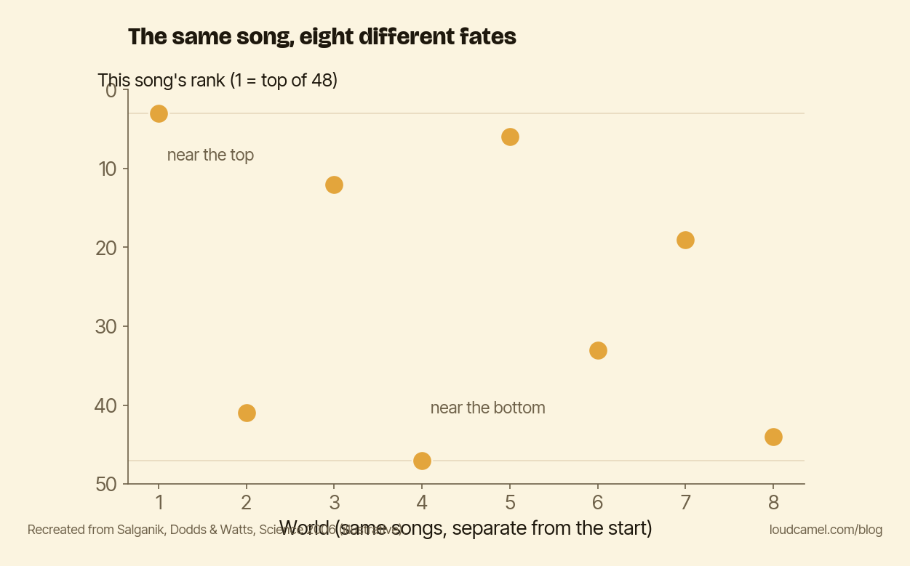

Same song, different universe: what a music experiment says about your citations
Ask a room of researchers why some papers get cited and others disappear, and most will give you a version of the same answer. The good ones rise. Quality wins in the end.
A music experiment from 2006 says that answer is mostly wrong. In a market where people can see what others have already picked, success comes apart from quality, and early visibility decides most of what is left. That is my whole point here, and the rest of this post is the evidence for it.
The experiment
Salganik, Dodds, and Watts built an online market for music and published what happened in Science (“Experimental Study of Inequality and Unpredictability in an Artificial Cultural Market”). 14,341 people listened to, rated, and downloaded 48 songs by then-unknown bands.
The clever part was the split. In one condition, people saw no information about what anyone else had chosen. They just listened and decided. Call it the quality-only baseline. In the other condition, people could see how many times each song had already been downloaded.
That second condition was itself split into eight separate “worlds.” Every world started identical and then ran on its own, with no contact between them. Same songs, same starting line, eight parallel universes.
What the download counts did
Two things happened once people could see the counts.
First, success became far more unequal. The hits got bigger and the flops got more ignored. The gap between top and bottom grew wider still when songs were shown ranked by popularity rather than in a plain grid. Visible success bred more success.
Second, and this is the unsettling part, the outcomes stopped being predictable. The same song finished near the top in one world and near the bottom in another. The song did not change. What changed was that in each world, some early and partly random pattern of downloads got amplified into a cascade. Whoever caught an early lead tended to keep it, and the early lead was mostly luck.

The chart above shows one song’s final rank across the eight worlds, scattered from near the top to near the bottom. One recording, eight fates.
Quality was not nothing. It just was not destiny.
Here is the honest part. Quality did not vanish. The songs people rated best in the no-information baseline rarely crashed all the way to the very bottom, and the genuinely weak ones rarely climbed to the very top. Quality set a floor and a ceiling.
Between those bounds, almost anything could happen. Being good kept a song out of the basement. It did not get the song to the penthouse. Visibility did that.
Why this is a story about your citations
Scientific recognition is one of the most signal-rich markets there is. Citation counts, h-indices, download stats, “cited by” lists, altmetrics. All public, all visible, all sitting right next to the work. When someone decides whether to read and cite your paper, they can already see what everyone else has attended to.
So science does not run in the quality-only baseline. It runs in the condition with the visible download counts.
That means a paper’s fate is shaped by the same dynamic that scattered that one song across eight worlds. Early attention compounds. A paper that gets read and cited in its first months looks more worth reading, which gets it read and cited more. A paper that lands in silence looks skippable, and the silence deepens. Two equally good papers can end up an order of magnitude apart, and the difference is often just who saw them first.
What to do this week
Your next paper does not get published into the quality-only baseline. It gets published into the world with the download counts showing, where early visibility is the fluctuation that compounds.
So do not leave that early signal to chance. Before your next paper goes public, write down a specific handful of people who genuinely should see it, the ones working on adjacent problems who would cite it if they knew it existed. When it lands, make sure those people actually see it in the first week. Not a broadcast to everyone. A short list, contacted on purpose.
Whether that is enough to start a cascade, I honestly do not know. But leaving it to luck is a strategy too, and you have seen what luck did to that song.